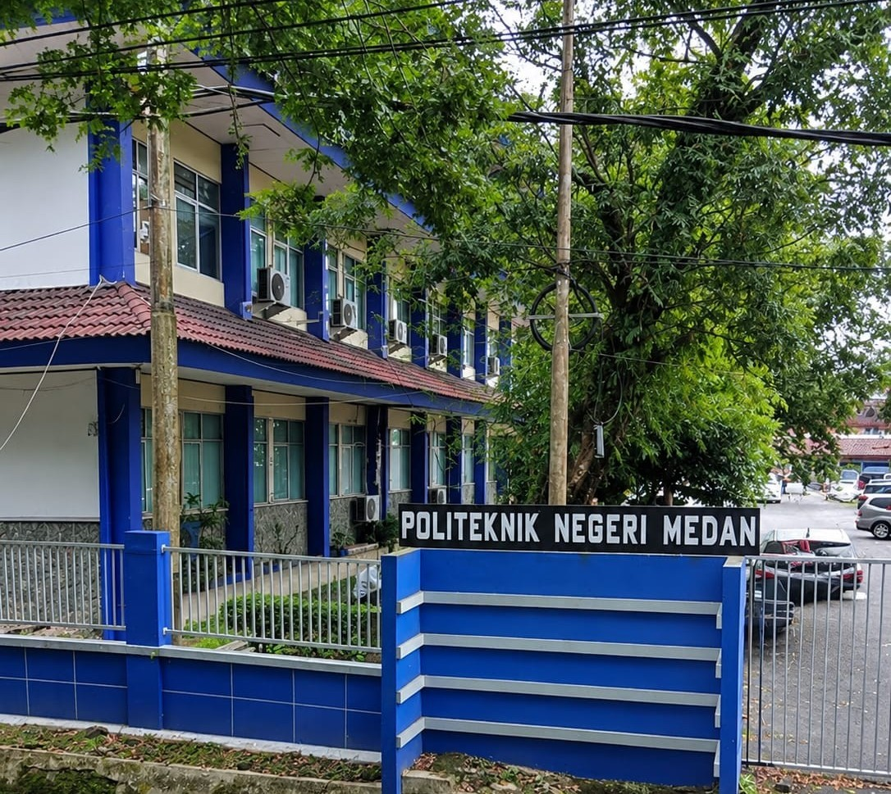

Jurusan Teknik Komputer dan Informatika Politeknik Negeri Medan berkomitmen menghasilkan lulusan yang unggul dalam bidang teknologi komputer, jaringan, perangkat lunak, dan sistem informasi, serta bersaing di tingkat nasional maupun global.

Menjadi jurusan pendidikan Vokasi unggulan dalam bidang Ilmu Teknik Komputer dan Informatika untuk menyiapkan tenaga profesional yang adaptif terhadap perubahan IPTEK serta berdaya saing nasional dan regional.